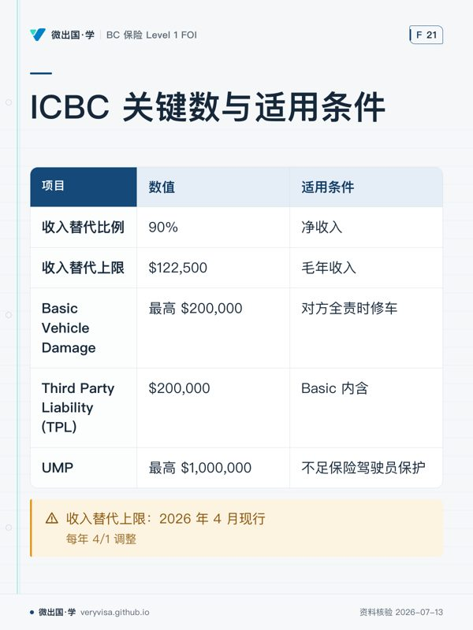

规则：任何 AI 输出中出现的保险金额、限额、日期、费用，必须能在本表找到出处。找不到 → 标注"未核实"，不得当作事实陈述。 每条都有【核实日期】和【来源】。ICBC 数字每年 4 月 1 日调整。
⚠️ 已发现的数据冲突（必须知道）
| 项目 | 项目内旧值 | 现行正确值 | 备注 |
|---|---|---|---|
| Enhanced Care 收入替代上限（毛年收入） | agy/notes/nb02-icbc_topic1_notes.md 写 $119,000 ❌ |
$122,500 ✅ | 该笔记是 2026-06 由 agy 从旧资料生成的，已过时。ICBC 官方 2026 年 4 月现行值为 $122,500，每年 4/1 调整 |
| Income Top-Up 购买门槛 | 本台账 v1 写 > $100,000 ❌ | > $122,500（超过基础上限者才需要买） ✅ | 2026-07-13 对照 ICBC Income Top-Up 页面原文修正 |
| Income Top-Up 上限 | 本台账 v1 写 最高至 $200,000 毛年收入 ❌ | 按 $10,000 一档加购，最多加 $100,000（覆盖毛年收入至约 $222,500） ✅ | $200,000 疑为"基础上限 $100k 时代"的过期数字。同上来源修正 |
教训：AI 生成的笔记会固化过期数字。所以有了这张台账——笔记里的数字必须回到这里对账。
ICBC / Enhanced Care（核实 2026-07-13）
| 项目 | 数值 | 来源 |
|---|---|---|
| 收入替代比例 | 净收入的 90% | ICBC Enhanced Care |
| 收入替代上限（毛年收入） | $122,500 | ICBC，2026 年 4 月现行；每年 4/1 调整 |
| Income Top-Up 购买门槛 | 毛年收入 > $122,500（超过基础上限、且无雇主等其它收入替代保障者） | ICBC Income Top-Up 页面原文，核实 2026-07-13 |
| Income Top-Up 购买方式与上限 | $10,000/档，最多加购 $100,000（覆盖毛年收入至约 $222,500） | ICBC Income Top-Up 页面原文，核实 2026-07-13 |
| 护理与康复福利总限额 | 无总限额 | ICBC |
| 预批治疗期 | 事故后前 12 周（按摩、心理咨询等无需医生转介） | ICBC |
| Basic Vehicle Damage Coverage (BVDC) | 最高 $200,000（对方全责时修车） | ICBC |
| Third Party Liability (TPL) — Basic 内含 | $200,000 | ICBC |
| UMP（不足保险驾驶员保护） | 最高 $1,000,000 | ICBC |
| Enhanced Care 生效日 | 2021 年 5 月 1 日 | ICBC |
| Basic 费率冻结至 | 2027 年春（2026-27 财年内不变，连续 7 年不涨） ✅ | ICBC 官方公告 2025-10-28，核实 2026-07-13 |
考试制度（核实 2026-07-13）
| 项目 | 数值 | 来源 |
|---|---|---|
| FOI 考试 | 100 题单选 / 2.5 小时 / 70% 及格 | IBABC |
| IIBC Level 1 考试 | 100 题单选 / 2 小时 / 闭卷 / 70% 及格 | IIC |
| ILScorp L1 考试 | 200 题判断 / 3 小时 / 80% 及格 | ILScorp |
| 考纲权重 | Industry 30% / Auto 30% / Property 30% / Commercial 5% / Claims 5% | IIC |
| 考试成绩有效期 | 1 年 | Insurance Council of BC |
| 牌照申请时限 | 通过考试后 12 个月内递交 | Insurance Council of BC |
| Level 1 收入结构要求 | 年收入 ≥ 60% 须为工资 | Insurance Council of BC |
| CAIB 旧版截止 | 2026-12-31（2027-01-01 起只认新版） | Insurance Council of BC |
| BC Auto Supplement 必考 | 自 2023 年 1 月起 | IIC |
| GIE 用书版本 | 2025 版 C81/C82（自 2025-09-02 起）+ 2022 版 BC Auto 增补 | IIC |
| FOI 用书版本 | 2017 版 + Autoplan 增补 2024 年 4 月 | IBABC |
| FOI 用书 ch12/13/14 已被取代 | 2024-04 Autoplan Supplement 取代 FOI 用书第 12、13、14 章;这三章一律忽略,改读增补册 | 增补册封面页写明它取代该用书的第 12、13、14 章,要求忽略那三章、改读本增补册 + IBABC(Sara Carver)2026-07-24 邮件答复用户,双证一致 [核2026-07-24] |
二次核验记录（2026-07-13，独立复核）
以下事实已于 2026-07-13 对照官网原文二次核验，逐字一致：考纲权重 30/30/30/5/5 与全部子项（IIC 页面）；FOI 用书 $165（2017 版 + 2024/04 Autoplan 增补）、考试 $195/100 题单选/2.5h/70%、成绩 1 年有效、6 个月后不退、第 2 次可立即重考、监考四选项（IBABC 页面）；CAIB 1 用书 $315/$415、考试 $395、含名词解释与简答、旧版 2026-12-31 截止（IBABC + Council 页面）；ILScorp $509/200 题判断/3h/80%/重考 $150/3 个月访问期（ILScorp 页面）；ILScorp 等效路径 2026 年仍列在 Council 官网 Level 1 教育选项中；牌照申请须在通过考试后 12 个月内递交、Rules Course 全员必修、Level 1 四项执业限制含 60% 工资要求（Council 页面）；IIBC 2026 下半年考期（含 11/30–12/18 线上窗口与 12/16 线下）；ICBC 收入替代上限 $122,500（现行页面）。
BC 牌照与年度持有成本（核实 2026-07-15，Council 官网 Fee Schedule + 2026 费率公告）
2026 新费率自 2026-06-01 生效，2026 年 4 月起的续牌按新费率。
| 项目 | 数值（Council 费 + 政府费 = 合计） | 性质 | 来源 |
|---|---|---|---|
| 个人牌照申请费（首次拿 Level 1） | $390 + $25 = $415 | 一次性 | Council Fee Schedule |
| 3–5 月申请附加政府费 | +$25 | 视时段 | 同上 |
| General insurance trainee 申请 | $100 | 一次性（如走 trainee） | 同上 |
| 个人年度续牌费 | $350 + $25 = $375/年 | 每年（牌照不再过期，但每年 6/1 前须申报+缴费） | 同上 |
| 年度续牌迟交附加费 | +$260 | 罚则 | 同上 |
| 牌照升级申请（Level 1→2、2→3 各一次） | $235 + $25 = $260/次 | 一次性 | 同上 |
| Council Rules Course（general） | $160 | 一次性，拿牌必修 | 同上 |
| Nominee 责任课（将来做 nominee 才需要） | $240 | 一次性 | 同上 |
| E&O 保险 | 通常雇主承担 | 年度 | 行业惯例 |
| CE 持续教育 | 8 学分/年；课程常由雇主/协会免费或低价提供 | 年度 | Council CE 要求 |
Level 1 上岗第一年一次性支出（牌照侧，不含用书与考试费）： 申请 $415 + Rules Course $160 = $575。之后每年续牌 $375。
CAIB New Edition 1.0 —— 新捆绑模式（核实 2026-07-15，IBABC CAIBNewEdition 页面）
⚠️ 重大变化：CAIB 已改为"用书+考试捆绑"，考试不能再单独购买。 我之前 kb/01 里"CAIB1 只比 FOI 贵 $200"的说法基于旧的拆分定价，已过时作废。新模式最低单科（Self-Study 数字版）价格如下：
| 交付方式 | 数字版 | 纸质版 | 全套 |
|---|---|---|---|
| Self-Study（自学，最低价，含考试费） | 会员 $650 / 新人 $850 / 非会员经纪 $1,150 | 会员 $750 / 新人 $950 / 非会员经纪 $1,250 | 会员 $900 / 新人 $1,100 / 非会员经纪 $1,400 |
| On-Demand（录播自定进度） | 会员 $855 起 | — | 会员 $1,105 起 |
| Instructor-Led（直播班） | 会员 $925 起 | — | 会员 $1,175 起 |
| Exam Prep Clinic（3h 冲刺，可选加购） | 会员 $200 / 非会员 $400 | ||
| 重考费 | 会员 $150 / 非会员 $300 |
- 三种身份定价： 会员=受雇于 IBABC 会员经纪行；新人（New Entrant）=完全新入行、尚无经纪行（= AlanSun 现在的身份）；非会员经纪=雇主非 IBABC 会员。
- CAIB 考试： 3.5 小时，含单选+名词解释+简答，60% 及格（不是 70%）。CAIB 4 新版也已加入单选题。
- CAIB 1 新版已含 ICBC Autoplan 增补，且 IBAC 承诺每年更新内容。
- 升级映射： CAIB 1 → Level 1；CAIB 2 + CAIB 3 → Level 2；CAIB 4 → Level 3。
- 考试注册 6 个月内有效；旧版考试到 2026 年 12 月初截止。
全套 CAIB designation（1+2+3+4）自学数字版最低估算： - 若全部以会员价（需先入职会员经纪行）：$650 × 4 = $2,600 - 若 CAIB 1 现在以新人价先考、2–4 入职后按会员价：$850 + $650 × 3 = $2,800 - 若雇主非 IBABC 会员：$1,150 × 4 = $4,600 - 以上均未含税（GST 5%）、未含重考、未含可选冲刺班。
待核实清单（下次联网时补）
- [ ] IIBC "只买 GIE 用书 + 只写 BC Level 1 单张执照考试"的确切价格（需电话 778-328-3456）
- [ ] Fire Statutory Conditions 的现行条文版本（BC Insurance Act，bclaws 原文落盘）
- [x] ~~Council Rules Course 费用~~ → $160（2026-07-15 核实）
- [x] ~~Level 1 牌照申请费~~ → $415（2026-07-15 核实）
维护规则
- 数字变了 → 改这里，不要改笔记。笔记引用台账，不复制台账。
- 每条必须带【核实日期】。超过 90 天 = 视为可疑，用前重核。
- AI 若在考试口径里读到与本表冲突的数字：考试口径优先用于答题（考试考考试口径），台账优先用于实务，并在此处记一条冲突。
本页知识卡
不看正文也能拿到这一节的核心内容：先看导读，再看图。点图放大，左右翻页。
- 先看先盯购买门槛这一行，它直接改变谁需要考虑加购。
- 易漏旧笔记里的数不能直接沿用；金额要回台账核对更新时间与版本。
- 下一步去知识卡，拿手头笔记逐项做一次数字核对。

- 先看先找两个同额的责任类项目，再看它们各自对应什么场景。
- 易漏收入项和车辆损失项不是同一口径；金额旁的适用场景不能互换。
- 下一步去练习，把每个金额反向问成「它对应哪种保障」。